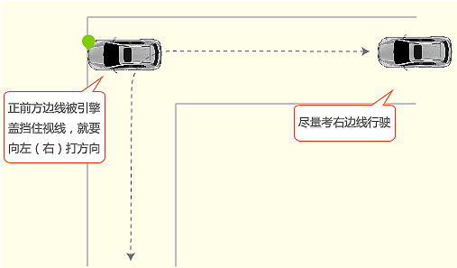

一、操作要求
用低速按规定的行驶路线，不停车地一次90度急转弯通过直角。如转不过弯，可借助一次倒车，但要被扣10分。

二、评判标准
 车轮触压突出点，不合格；
车轮触压突出点，不合格；
 车轮触压路牙一次，扣20分；
车轮触压路牙一次，扣20分；
 借助倒车，扣10分。
借助倒车，扣10分。
三、考试技巧
 尽量靠近道路外侧行驶，摆正车身，抵挡慢速前进。
尽量靠近道路外侧行驶，摆正车身，抵挡慢速前进。
 当身体(肩膀)和直角弯过来的桩平行的时候，快速打方向拐弯。
当身体(肩膀)和直角弯过来的桩平行的时候，快速打方向拐弯。
 向左转弯：车辆靠近右边行驶，当左车角与右边缘线相重合时，方向往左打一圈，同时微调方向，让左车角和右边缘线基本重合，沿着S路向左转弯，车辆就不会压线或出线了。驶过左弯后准备向右转弯。
向左转弯：车辆靠近右边行驶，当左车角与右边缘线相重合时，方向往左打一圈，同时微调方向，让左车角和右边缘线基本重合，沿着S路向左转弯，车辆就不会压线或出线了。驶过左弯后准备向右转弯。
 当车头对准直角弯出口时，迅速回方向，摆正车身出去就可(也可以通过观察后视镜的方法，查看后轮的运动位置，即当后轮将要越过转弯拐点时，再回正转向盘)。
当车头对准直角弯出口时，迅速回方向，摆正车身出去就可(也可以通过观察后视镜的方法，查看后轮的运动位置，即当后轮将要越过转弯拐点时，再回正转向盘)。
 准备过弯时减速至5公里以下，根据前方视线辨认两侧边线，边转弯边走，随时调整方向。
准备过弯时减速至5公里以下，根据前方视线辨认两侧边线，边转弯边走，随时调整方向。